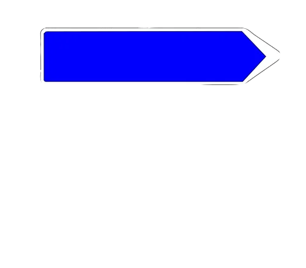
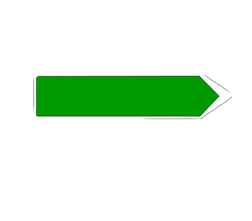
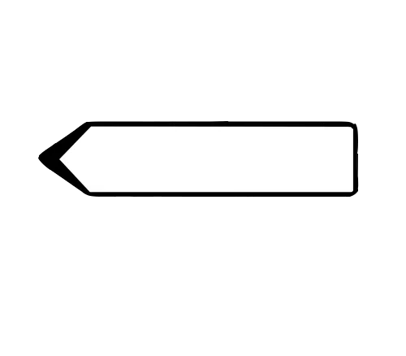

Exposition "Art des rues"
Jean-michel Basquiat
Banksy
Miss.Tic
Keith Haring
Exposition de street art du 13 avril au 23 juin 2021

C'est quoi le street art ?

Jean-michel Basquiat

Banksy
Miss.tic
Keith Haring